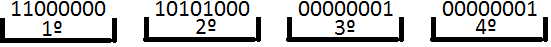

◉ Entendendo o endereçamento IPv4
O Endereçamento IPv4 é a numeração que representa um dispositivo em uma Rede. De roteadores profissionais da Internet, passando por Redes
Wireless domésticas e Modens 3G, todo dispositivo requer um endereço IP para se conectar uns com os outros.
Vemos na figura abaixo um exemplo de Equipamentos que estão com endereço IPv4 atribuído para que haja conectividade entres os mesmos.
Repare que cada dispositivo possui seu próprio endereço e usa o mesmo para ser achado e achar outros dispositivos na Rede.
Em ambientes Microsoft, temos contato com essa configuração em “Central de Rede e Compartilhamento”. Lá podemos configurar o Endereçamento
Ipv4 mais adequado as nossas necessidades.
Vamos as suas principais características que serão trabalhadas ao longo dos posts.
• Pode ser Representado em binários ou notação Decimal
Quem nunca utilizou o endereço 192.168.1.1? Pois bem, essa sequencia de números representa um tipo de Endereçamento IPv4 muito utilizado
em redes locais.
Repare que a representação acima está em notação decimal que facilita o entendimento e a administração, porém por detrás dessa representação
mais amigável há a sua representação em binários.
Decimal = 192.168.1.1
Binário = 11000000 10101000 00000001 00000001
Teremos um post explicando a conversão de Decimal para binário e de binário para decimal.
• Composto por 32 bits e separados em 4 Octetos
Na representação abaixo, vemos claramente a quantidade de octetos e sua quantidade máxima de 8 bit

Dessa forma, temos um número máximo de 32 bits no total. Saber desses detalhes é essencial para o entendimento do cálculo de Sub-Redes
que veremos à frente.
• Divide-se a quantidade de Redes e Host pela máscara de Rede
O Endereçamento IPv4 é dividido em duas partes. Rede e Host. Essa divisão se dá pela Máscara de Rede utilizada juntamente com o endereço.
Seguindo nosso primeiro exemplo, temos:
IP = 192.168.1.1
Máscara Padrão = 255.255.255.0
Repare que a máscara é representada pela sequência de números 255.255.255.0. A Rede são todos os números até o 3º octeto. No quarto e último
octeto temos o número zero, que representa aquele octeto que ficará disponível somente para o endereçamento de Hosts.
Notamos que a máscara de rede segue a mesma representação do Endereço IP. Ou seja, a notação decimal e a binária.
Decimal = 255.255.255.0
Binária = 11111111 11111111 11111111 00000000
• Pode ser dividido em Classes
No início do uso do Endereçamento IPv4, foram feitas separações para o uso desses números com base em um sistema de classes.
Cada classe possuía sua própria máscara e a sua quantidade de redes e Host era fixa.
Na tabela abaixo temos as principais classes e suas principais referências.
Esse sistema foi relativizado e hoje não temos mais o conceito de classes fixas. Avançaremos nessa questão com um post específico.
• Será substituído pelo IPv6
Devido à explosão de dispositivos conectados à internet, os escopos de endereçamento públicos estão esgotando rapidamente.
Mesmo com uma série de medidas para prolongar a vida do Ipv4, o mesmo já não possui mais fôlego para mais tempo.
Dessa forma, um novo tipo de endereçamento já foi projetado e já está sendo utilizado afim de substituir o antigo. Esse assunto ficará como
dica de pesquisa já que nosso foco é o tão ainda utilizado Ipv4.